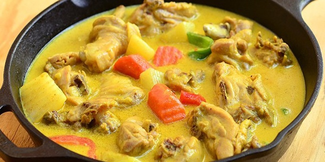

Daging ayam merupakan salah satu bahan masakan yang bisa diolah menjadi berbagai masakan lezat. Selain di goreng, umumnya daging ayam dimasak opor. Kuah santan yang kental, bumbu rempah yang enak dan daging ayamnya yang gurih, setidaknya membuat opor ayam semakin disukai banyak orang. Apalagi, jika daging yang digunakan adalah ayam kampung. Ngomongin soal opor ayam kampung, kali ini Vemale punya resepnya. Bagaimana, simak berikut ini.
Bahan-bahan untuk membuat Opor Ayam Kampung:
- -1 ekor ayam kampung (panggang lalu potong sesuai selera)
- -700 ml santan kelapa (dari 1 buah kelapa)
- -3 lembar daun jeruk
- -1 lembar daun salam
- -2 batang serai (memarkan)
- -5 cm jahe (memarkan)
- -1 buah tomat (iris empat)
- -Minyak goreng (secukupnya, untuk menumis bumbu)
- -Bawang merah goreng (secukupnya)
Bumbu Halus:
- -10 siung bawang merah
- -6 siung bawang putih
- -7 cm kunyit
- -3 buah cabai merah besar (buang isi)
- -5 buah kemiri
- -20 buah cabai rawit
- -Merica (secukupnya)
- -Garam (secukupnya)
- -Gula (secukupnya)
- -Kaldu ayam bubuk (secukupnya)
Lankah-langkah:
- 1.Goreng bumbu yakni bawang merah, bawang putih, cabai merah, cabai rawit dan kemiri lalu haluskan bersama garam, gula dan merica dengan cara diulek atau diblender.
- 2.Panaskan sedikit air. Jika sudah mendidih, masukkan bumbu.
- 3.Masukkan batang serai, daun jeruk, daun salam, jahe dan lengkuas.
- 4.Masukkan daging ayam dan masak hingga bumbu meresap serta daging ayam empuk.
- 5.Terakhir, masukkan santan kelapa dan biarkan hingga mendidih.
- 6.Agar santan tidak menggumpal selama proses dimasak, aduk-aduk saat opor ayam mulai mendidih.
- 7.Taburkan bawang merah goreng, tomat dan kaldu ayam bubuk. Masak beberapa menit lalu angkat dan segera sajikan.